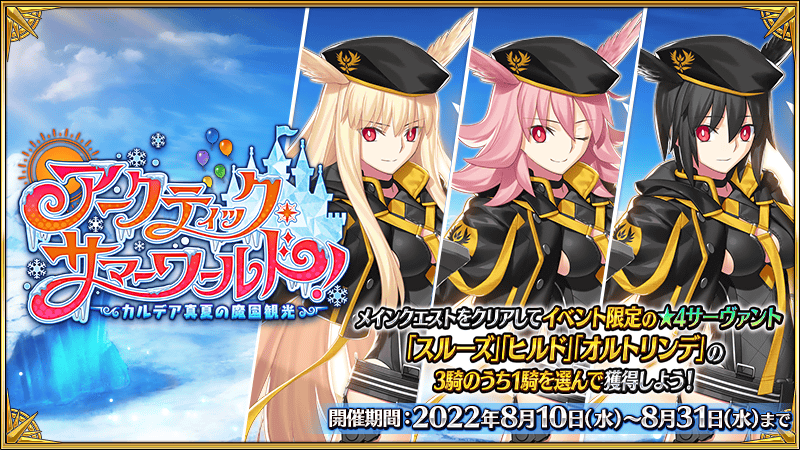
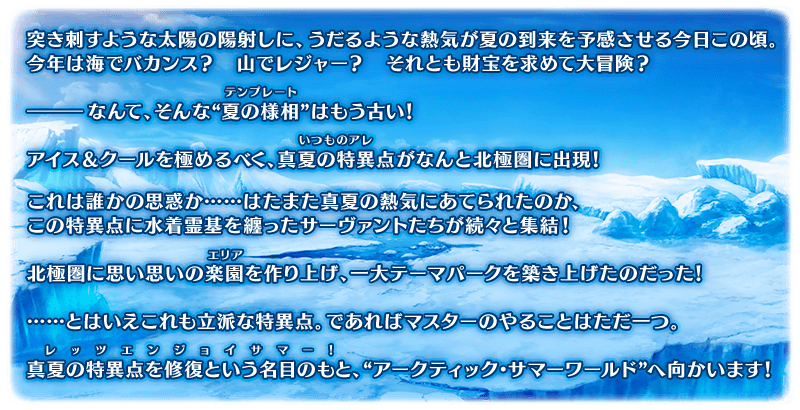
期間限定活動「北極夏日世界！ ～迦勒底盛夏的魔園觀光～」開幕！
在北極圏突然出現的主題樂園做為特異點舞台，御主為了解決事態，前去遊覽身穿泳裝靈基的從者各自打造的樂園(區域Area)。
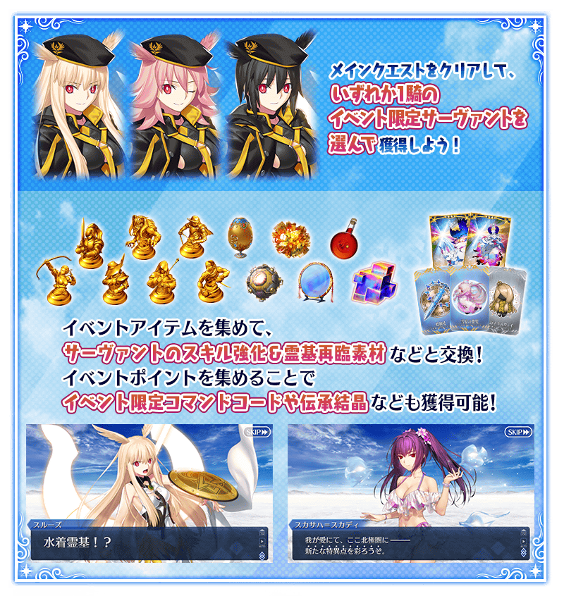
◆活動舉辦期間◆
2022年8月10日(三) 20:00～8月31日(三) 11:59
◆活動參加條件◆
滿足以下條件的御主才能參加
・通過「特異點F 炎上汙染都市 冬木」
※本頁面皆為開發中圖片。會有與實際圖片相異的情況。 ※本活動的主線關卡與自由關卡將逐日開放。 ※在文字冒險部份會包含第2部的內容。 ※在2018年12月31日(二) 23:00以後新配信的主線故事及期間限定活動、一部份關卡、宣傳活動及召喚中，會顯示隱藏真名的對象從者真名。
北極夏日世界！ ～迦勒底盛夏的魔園觀光～廣告公開中！
在「Fate/Grand Order」官方網站內首頁及Gallery，公開了期間限定活動「北極夏日世界！ ～迦勒底盛夏的魔園觀光～」的電視廣告。
敬請確認。
動畫製作：CloverWorks
活動的遊び方
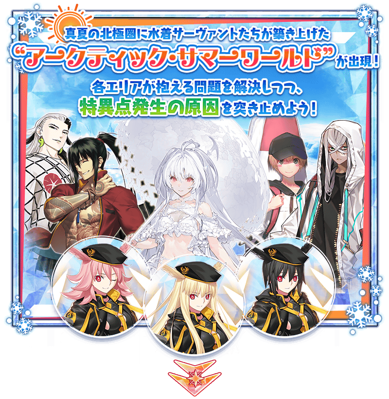 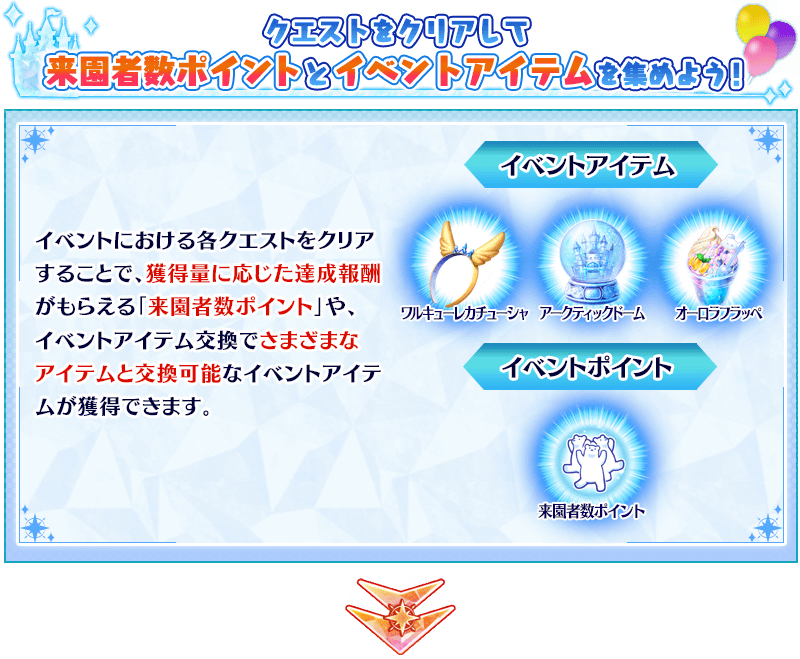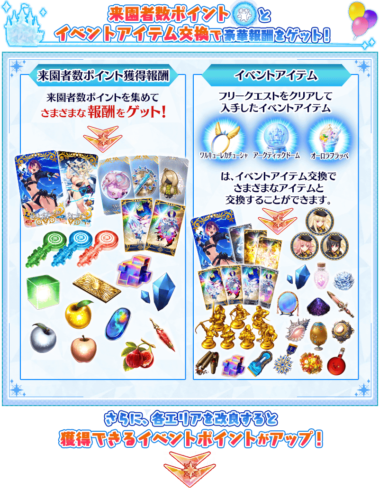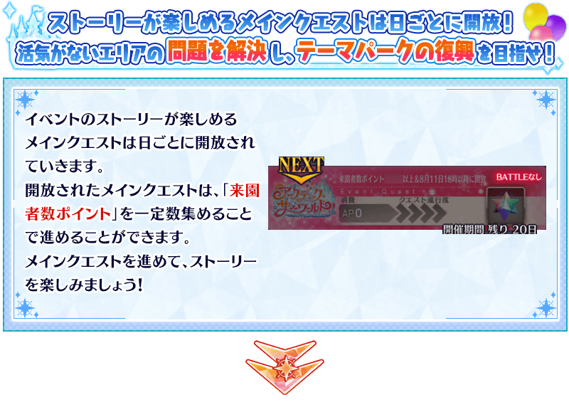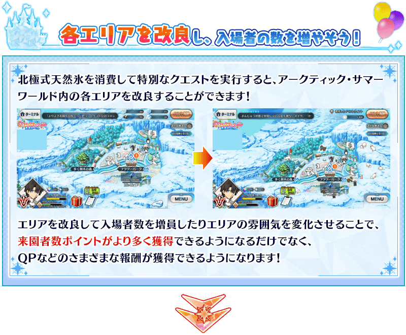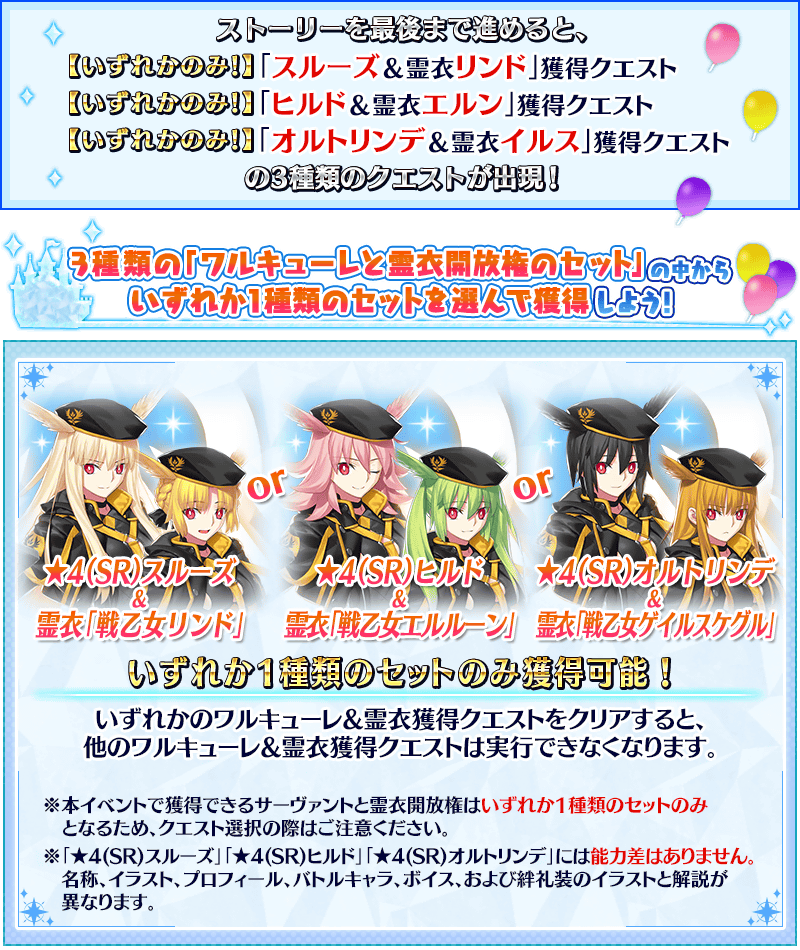
享受劇情的主線關卡將逐日開放。
通過主線關卡到最後的話，會出現可入手活動限定從者與靈衣開放權組合的獲得關卡。
還有通過關聯的主線關卡後，會開放收集活動道具的自由關卡。
※想推進每天的主線關卡，對應關卡的進行需要一定數以上的活動點數。
【關卡的舉辦期間】
| 關卡的種類 | 舉辦期間 | 開放主線關卡的必須活動點數 |
|---|---|---|
|
序幕(プロローグ) 主線關卡第1節 自由關卡 |
2022年8月10日(三) 20:00～ 8月31日(三) 11:59 |
― |
|
主線關卡第2節 自由關卡 |
2022年8月11日(四) 17:00～ 8月31日(三) 11:59 |
・主線關卡第2節
2,000點數 |
|
主線關卡第3節 迷你劇本關卡 自由關卡 |
2022年8月12日(五) 17:00～ 8月31日(三) 11:59 |
・主線關卡第3節 10,000點數 |
|
主線關卡第4節～第5節 自由關卡 |
2022年8月13日(六) 17:00～ 8月31日(三) 11:59 |
・主線關卡第4節 40,000點數 |
|
主線關卡第6節 迷你劇本關卡 自由關卡 |
2022年8月14日(日) 17:00～ 8月31日(三) 11:59 |
・主線關卡第6節 100,000點數 |
|
主線關卡第7節 自由關卡 |
2022年8月15日(一) 17:00～ 8月31日(三) 11:59 |
・主線關卡第7節 200,000點數 |
|
主線關卡第8節 後記(エピローグ) 迷你劇本關卡 自由關卡 |
2022年8月16日(二) 17:00～ 8月31日(三) 11:59 |
・主線關卡第8節 300,000點數 |
※通過主線關卡後會開放自由關卡。

推進本活動的故事到最後的話，會出現可入手活動限定從者與靈衣開放權組合的以下3種獲得關卡。
・『【只限其一！】「斯露德＆靈衣琳達」獲得關卡』 ・『【只限其一！】「希露德＆靈衣奧爾露恩」獲得關卡』 ・『【只限其一！】「奧特琳德＆靈衣伊露絲」獲得關卡』
※3種關卡之中，通過其中一個獲得關卡的話，會變得無法施行其他獲得關卡。
從3種「瓦爾基麗與靈衣開放權組合」之中，通過其中一個的瓦爾基麗＆靈衣獲得關卡後，可入手活動限定從者「★4(SR)斯露德」「★4(SR)希露德」「★4(SR)奧特琳德」其中1位與對應的靈衣開放權組合。
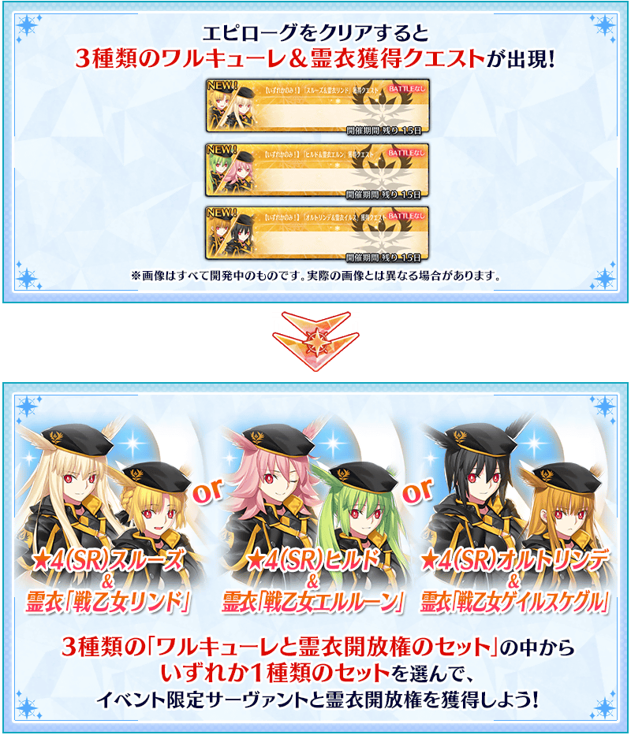
※由於本活動中可獲得的從者與靈衣開放權其中1種組合，選擇關卡時請注意。
※「★4(SR)斯露德」「★4(SR)希露德」「★4(SR)奧特琳德」沒有能力差異。
名稱、立繪、介紹、戰鬥角色、語音、及絆禮裝的插圖與解說有所差異。
關於活動限定從者的靈衣
3種「瓦爾基麗與靈衣開放權的組合」之中，選擇其中1種通過的話，可入手獲得的1位活動限定從者與1種靈衣開放權組合。
由於本活動中可獲得的從者與靈衣開放權其中1種組合，選擇關卡時請注意。
另外，想靈衣開放的話，除了靈衣開放權外再加上必須滿足一些開放條件。
◆有關靈衣開放權的注意◆
※「★4(SR)斯露德」「★4(SR)希露德」「★4(SR)奧特琳德」的靈衣開放權只限期間限定活動「北極夏日世界！ ～迦勒底盛夏的魔園觀光～」的活動期間才能入手。
※「★4(SR)斯露德」「★4(SR)希露德」「★4(SR)奧特琳德」的靈衣會隨著外觀變化一部份語音。
※「★4(SR)斯露德」「★4(SR)希露德」「★4(SR)奧特琳德」的靈衣開放權只能入手其中1個。未獲得關聯的活動限定從者就無法入手靈衣開放權，敬請注意。
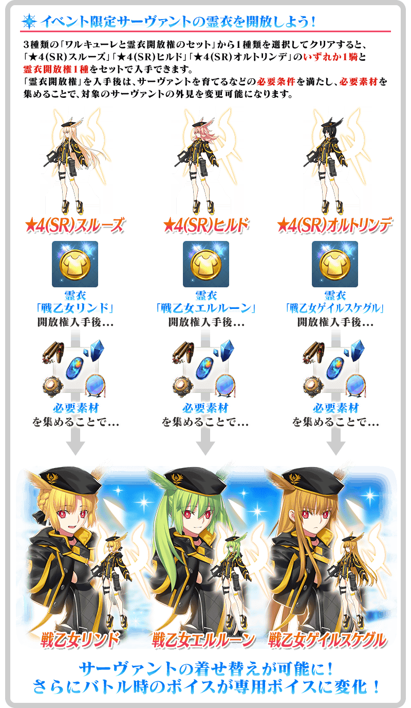

「靈衣開放」是自強化畫面進行。
※「靈衣開放」後會自動切換戰鬥角色和外觀圖片。若想回到「靈衣開放」前的狀態和變成其他再臨階段的情況，可自從者詳細畫面變更。 ※進行「靈衣開放」不會讓職階和能力等有所變化。
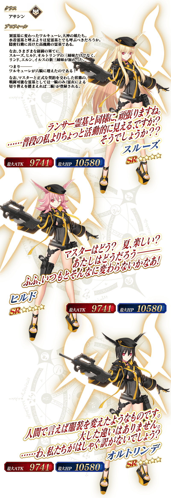
※8月10日(三) 22:40圖片修正
◆靈基再臨◆
使用能靠活動道具交換入手的「女武神的貝雷帽」，重複4次靈基再臨的話，卡面會有所變化！
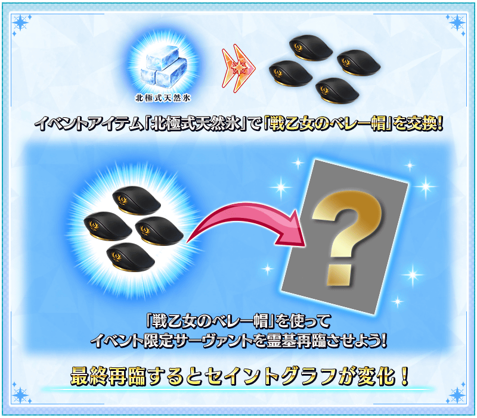
※「★4(SR)斯露德」「★4(SR)希露德」「★4(SR)奧特琳德」不會隨靈基再臨使戰鬥角色的外觀變化。
◆關於活動限定從者的從者硬幣◆
「★4(SR)斯露德」「★4(SR)希露德」「★4(SR)奧特琳德」任一的從者硬幣，在本活動中可在活動道具交換入手。

・活動道具交換:最多480枚
※可入手的從者硬幣，只限自身獲得的活動限定從者。
介紹「★4(SR)斯露德」的寶具演出！
【斯露德】
改善區域讓入場人數增加！
推進本活動的主線關卡的話，會出現為了改良各區域的「改良關卡」。
「改良關卡」中消耗可在活動中通過各關卡後入手的「北極式天然冰」後，進行區域的改良。
還有，「北極式天然冰」可在通過本活動的各自由關卡後入手。
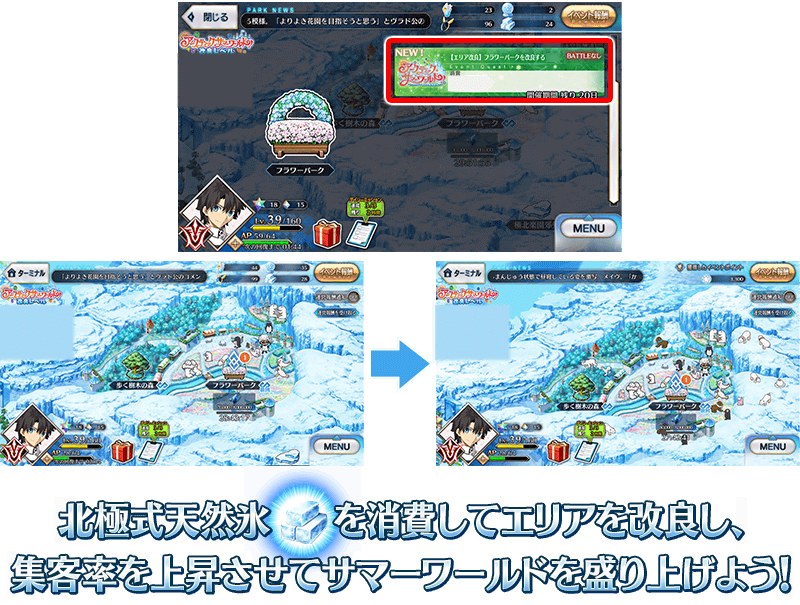
另外，活動地圖上可確認各區域的改良狀況。
區域改良的話在活動地圖會產生各式各樣變化外，該區域的「集客率」會提高。
「集客率」提高的話，由於自由關卡和主線關卡中可獲得的「來園者數點數」的獲得量提升，積極地的改良園地內的區域，讓「來園者數點數」的獲得量增加吧！
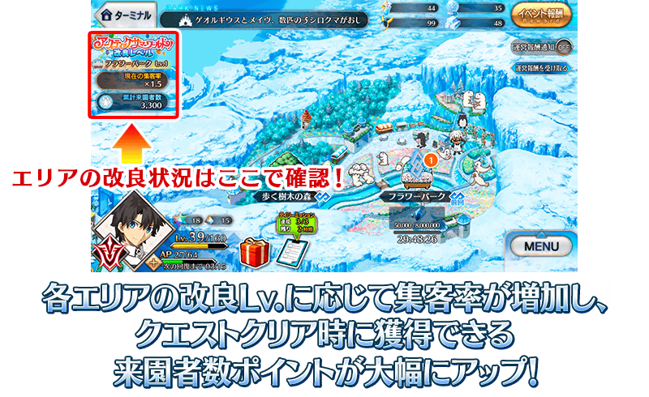
【各區域每個改良等級的集客率變化與北極式天然冰的必要個數】
|
|
|
|
|---|---|---|
| 植花園地 |
Lv.1：+0.5倍 Lv.2：+1.0倍 Lv.3：+1.5倍 Lv.4：+2.0倍 Lv.5：+2.5倍 Lv.6：+3.0倍 Lv.7：+3.5倍 Lv.8：+4.0倍 Lv.9：+4.5倍 Lv.10：+5.0倍 |
每1Lv.20個 |
|
通過主線關卡第2節後 開放的區域 |
Lv.1：+0.7倍 Lv.2：+1.4倍 Lv.3：+2.1倍 Lv.4：+2.8倍 Lv.5：+3.5倍 Lv.6：+4.2倍 Lv.7：+4.9倍 Lv.8：+5.6倍 Lv.9：+6.3倍 Lv.10：+7.0倍 |
每1Lv.25個 |
|
通過主線關卡第3節後 開放的區域 |
Lv.1：+1.0倍 Lv.2：+2.0倍 Lv.3：+3.0倍 Lv.4：+4.0倍 Lv.5：+5.0倍 Lv.6：+6.0倍 Lv.7：+7.0倍 Lv.8：+8.0倍 Lv.9：+9.0倍 Lv.10：+10.0倍 |
每1Lv.30個 |
|
通過主線關卡第5節後 開放的區域 |
Lv.1：+1.6倍 Lv.2：+3.2倍 Lv.3：+4.8倍 Lv.4：+6.4倍 Lv.5：+8.0倍 Lv.6：+9.6倍 Lv.7：+11.2倍 Lv.8：+12.8倍 Lv.9：+14.4倍 Lv.10：+16.0倍 |
每1Lv.40個 |
|
通過主線關卡第6節後 開放的區域 |
Lv.1：+2.5倍 Lv.2：+5.0倍 Lv.3：+7.5倍 Lv.4：+10.0倍 Lv.5：+12.5倍 Lv.6：+15.0倍 Lv.7：+17.5倍 Lv.8：+20.0倍 Lv.9：+22.5倍 Lv.10：+25.0倍 |
每1Lv.50個 |
|
通過主線關卡第7節後 開放的區域 |
Lv.1：+3.7倍 Lv.2：+7.4倍 Lv.3：+11.1倍 Lv.4：+14.8倍 Lv.5：+18.5倍 Lv.6：+22.2倍 Lv.7：+25.9倍 Lv.8：+29.6倍 Lv.9：+33.3倍 Lv.10：+37.0倍 |
每1Lv.60個 |
領取營運報酬！
做為各區域的營運報酬，隨著時間經過可獲得QP和從者培育必需的強化素材等各式各樣的報酬獲得。
並且，提高區域的改良Lv.的話到營運報酬獲得為止的所需時間會縮短。
還有由於儲存營運報酬的數量有上限，別忘記點擊在活動地圖上顯示的報酬領取鍵，獲得營運報酬吧！
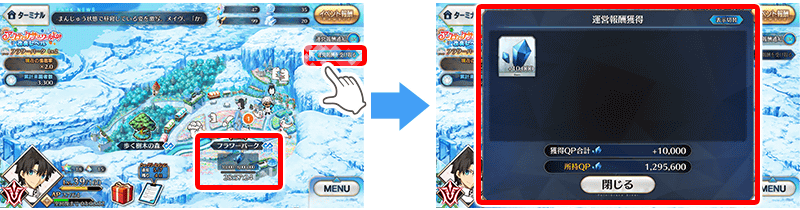
※活動舉辦期間結束後，能從活動道具交換期間內或「活動道具交換」畫面領取營運報酬。
◆關於｢營運報酬通知｣◆
「營運報酬通知」在ON的狀態結束程式的話，可獲得的營運報酬達到上限值的區域發生時，變得會收到推播通知。
※要使用本功能時，請在使用的裝置中變更能從程式收到通知的設定。就算本功能在ON的狀態，在使用的裝置設定成不收到通知的情況，不會顯示推播通知。
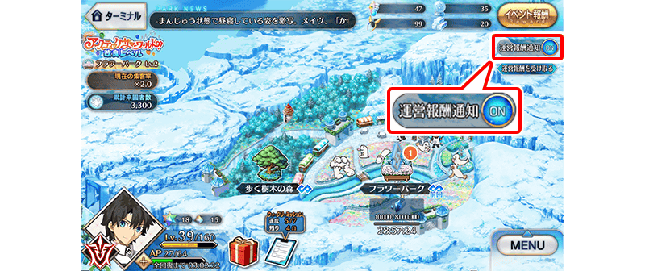
在活動地圖和「活動道具交換畫面」上方會顯示園地新聞。
園地新聞會配合主線關卡的進行狀況顯示「北極夏日世界」園內發生的各式各樣新聞。
※由於也有對應主線關卡的進行狀況變得不會顯示的新聞，敬請注意。
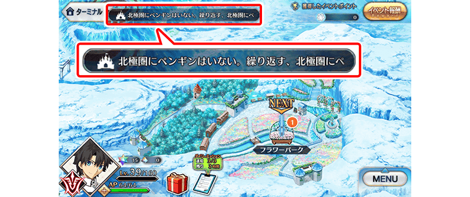
「★5(SSR)蘆屋道滿」「★4(SR)燕青(新宿的Assassin)」「★3(R)阿斯克勒庇俄斯」的靈衣開放權做為期間限定活動「北極夏日世界！ ～迦勒底盛夏的魔園觀光～」的報酬登場！
本活動中可靠活動道具交換入手上述靈衣開放權。
另外，想開放靈衣的話，除了靈衣開放權外再加上必須滿足一些開放條件。
關於詳情請在此處的公告確認。
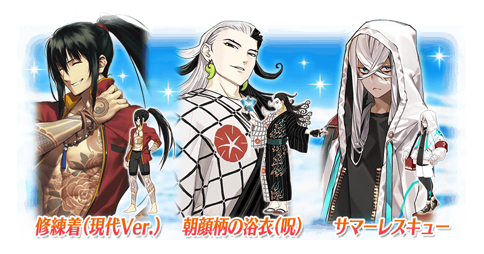
超值攻略方法・其1
本活動的期間中，強化活動限定從者的「★4(SR)斯露德」「★4(SR)希露德」「★4(SR)奧特琳德」時的獲得經驗值變成2倍。
是讓成為活動加成對象的從者等級一口氣上升的機會！
◆舉辦期間◆
2022年8月10日(三) 20:00～8月31日(三) 11:59
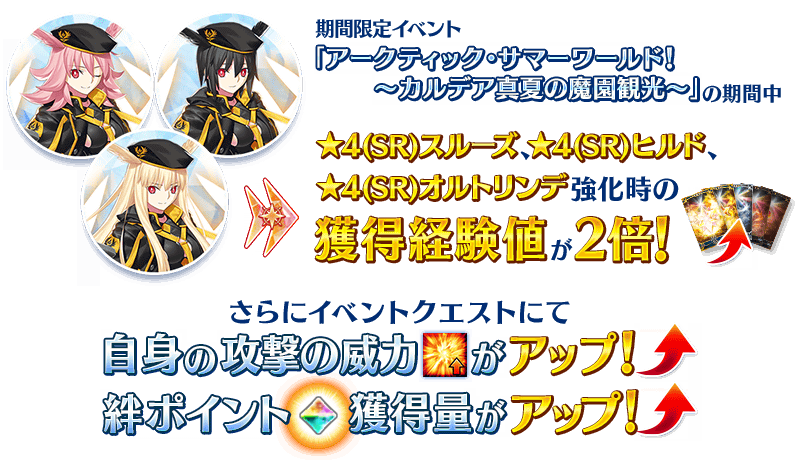
超值攻略方法・其2
本活動的期間中，下表的從者在活動關卡中會得到「自身的攻擊威力提升」與「絆點數獲得量提升」的加成！
強化對象從者，挑戰活動吧！
※活動加成的效果量因從者而異。 ※瑪修・基利艾拉特的「絆點數獲得量提升」效果，是所謂「我方全體含候補的絆點數獲得量提升」的效果。支援時此效果無效。
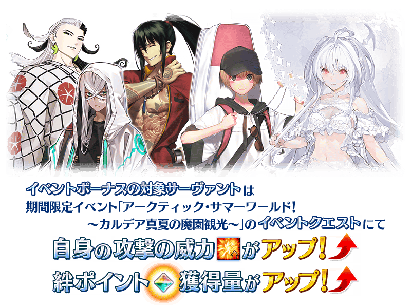
【活動加成的效果與對象從者】
| 自身的 攻擊威力 |
絆點數 獲得量 |
職階 | 稀有度 | 從者名 |
|---|---|---|---|---|
| ＋100% | 只限自身 ＋50% |
Assassin | ★★★★ | 奧特琳德 |
| ★★★★ | 斯露德 | |||
| ★★★★ | 希露德 | |||
| Berserker | ★★★★★ | 伊吹童子 | ||
| Pretender | ★★★★★ | 阿瓦隆女士 | ||
| ＋50% | 只限自身 ＋20% |
Saber | ★★★★ | 加雷斯 |
| Caster | ★★★ | 阿斯克勒庇俄斯 | ||
| Assassin | ★★★★ | 燕青(新宿的Assassin) | ||
| Avenger | ★★★★ | 宇津見繪里世 | ||
| Alterego | ★★★★★ | 蘆屋道滿 | ||
| MoonCancer | ★★★★★ | Archetype:Earth | ||
| 我方全體 ＋5% |
Shielder | ★★★ | 瑪修・基利艾拉特 | |
| ＋30% | 只限自身 ＋20% |
Saber | ★★★★★ | 沖田總司〔Alter〕 |
| ★★★★★ | 齊格魯德 | |||
| ★★★★ | 葛飾北齋 | |||
| ★★★★ | 齊格飛 | |||
| ★★★★ | 女王梅芙 | |||
| ★★★★ | 巴御前 | |||
| ★★★★ | 弗蘭肯斯坦 | |||
| ★★★★ | 蘭陵王 | |||
| Archer | ★★★★★ | 阿爾托莉亞・潘德拉剛 | ||
| ★★★★★ | 貞德 | |||
| ★★★★ | 安娜塔西亞＆Viy | |||
| ★★★★ | 安妮・伯妮＆瑪莉・瑞德 | |||
| ★★★★ | 伊莉雅絲菲爾・馮・愛因茲貝倫 | |||
| ★★★★ | Emiya | |||
| ★★★★ | 海倫娜・布拉瓦茨基 | |||
| ★★★★ | 刑部姬 | |||
| ★★★ | 羅賓漢 | |||
| Lancer | ★★★★★ | 玉藻前 | ||
| ★★★★ | 茨木童子 | |||
| ★★★★ | 清姬 | |||
| ★★★★ | 虞美人 | |||
| ★★★★ | 謎之Alterego・Λ | |||
| ★★★★ | 源賴光 | |||
| Rider | ★★★★★ | 阿基里斯 | ||
| ★★★★★ | 阿爾托莉亞・潘德拉剛〔Alter〕 | |||
| ★★★★ | 伊絲塔 | |||
| ★★★★ | 卡米拉 | |||
| ★★★★ | 凱妮絲 | |||
| ★★★★ | 紫式部 | |||
| ★★★★ | 莫德雷德 | |||
| ★★★ | 曼迪卡爾多 | |||
| ★★ | 愛德華・蒂奇 | |||
| Caster | ★★★★★ | 尼祿・克勞狄烏斯 | ||
| ★★★★★ | 梅林 | |||
| ★★★★ | 吉爾伽美什 | |||
| ★★★★ | 夏洛特・科黛 | |||
| ★★★★ | 瑪莉・安東尼 | |||
| Assassin | ★★★★ | 牛若丸 | ||
| ★★★★ | 沖田・J・總司 | |||
| ★★★★ | 斯卡薩哈 | |||
| ★★★★ | 尼托克里絲 | |||
| ★★★ | 風魔小太郎 | |||
| Berserker | ★★★★★ | 宮本武藏 | ||
| ★★★★ | 織田信長 | |||
| ★★★★ | 貞德〔Alter〕 | |||
| ★★★★ | 清少納言 | |||
| ★★★★ | 布倫希爾德 | |||
| Ruler | ★★★★★ | 阿爾托莉亞・潘德拉剛 | ||
| ★★★★ | 瑪爾大 | |||
| ★★★★ | 李奧納多・達・文西 | |||
| Avenger | ★★★★★ | 迦摩 | ||
| ★★★★★ | 巖窟王 | |||
| MoonCancer | ★★★★★ | 殺生院祈荒 | ||
| ★★★★★ | BB | |||
| Foreigner | ★★★★★ | 艾比蓋兒・威廉斯〔夏〕 | ||
| ★★★★ | 謎之女主角XX |
※8月14日(日) 9:00更新 ※就算成為對象從者也會有未在本活動的主線劇本登場的情況。 ※自8月5日(五) 17:00，在從者選擇畫面和從者強化畫面等，追加活動加成篩選器。由於是只顯示於活動活躍從者的便利功能，敬請活用。
超值攻略方法・其3
裝備活動限定概念禮裝與期間限定概念禮裝的話，在活動中會受到各式各樣的恩惠。
裝備可靠活動點數報酬和活動道具交換入手的活動限定概念禮裝「★5(SSR)フィスト・オブ・ヘイル」的話，在期間限定活動「北極夏日世界！ ～迦勒底盛夏的魔園觀光～」中「北極式天然冰」的掉落獲得數會提升！
另外，裝備可靠活動點數報酬入手的活動限定概念禮裝「★5(SSR)アイス・ウォーリアー」的話，在期間限定活動「北極夏日世界！ ～迦勒底盛夏的魔園觀光～」中自身的攻擊威力會提升。
並且，裝備在聖晶石召喚Pick Up的期間限定概念禮裝「★5(SSR)ツイン・テイル」「★5(SSR)インフィニティ・ブルー」「★4(SR)クルージング・デート」「★4(SR)釣り人来たる」「★3(R)キョンシー・アタック」「★3(R)ハロー！アークティック」的話，活動道具「瓦爾基麗髮箍」「北極水晶球」「極光刨冰」各自的掉落獲得數會提升。
※請注意各關卡的道具掉落率並非100％。
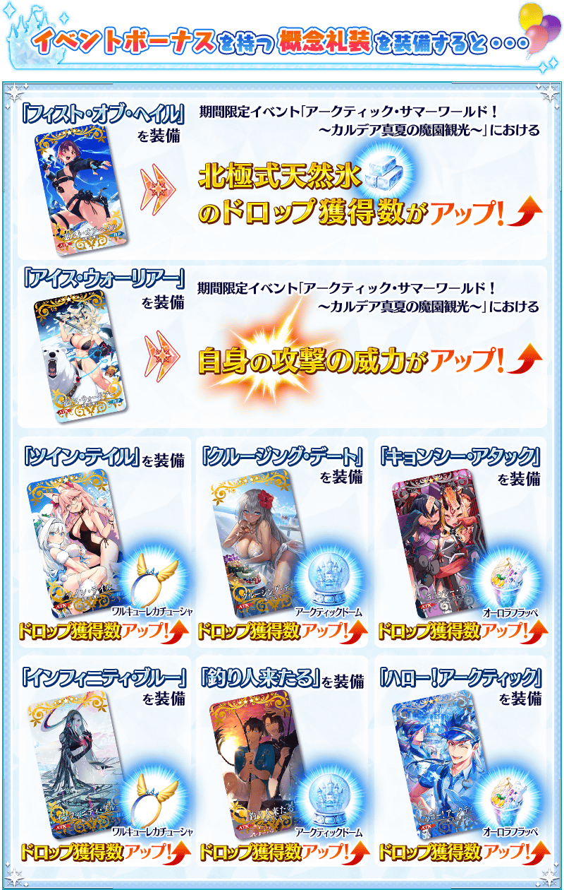
| 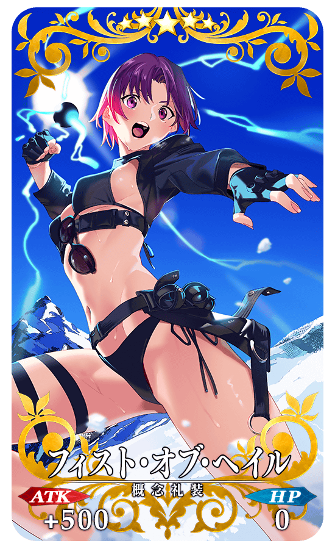 |
★★★★★SSR
◆最大解放時效果◆
|
| 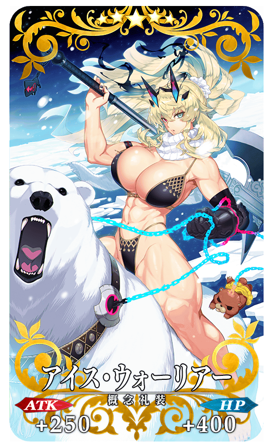 |
★★★★★SSR
◆最大解放時效果◆
|
| 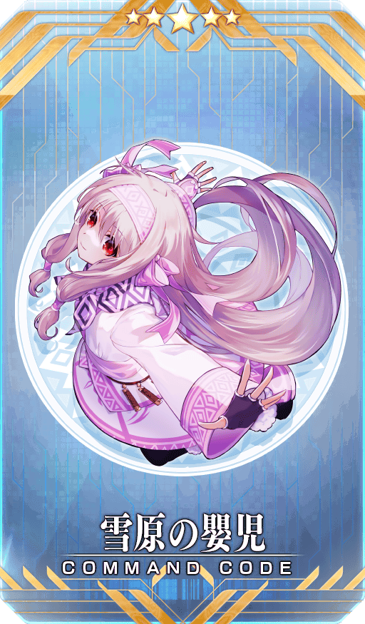 |
【活動限定】 |
| 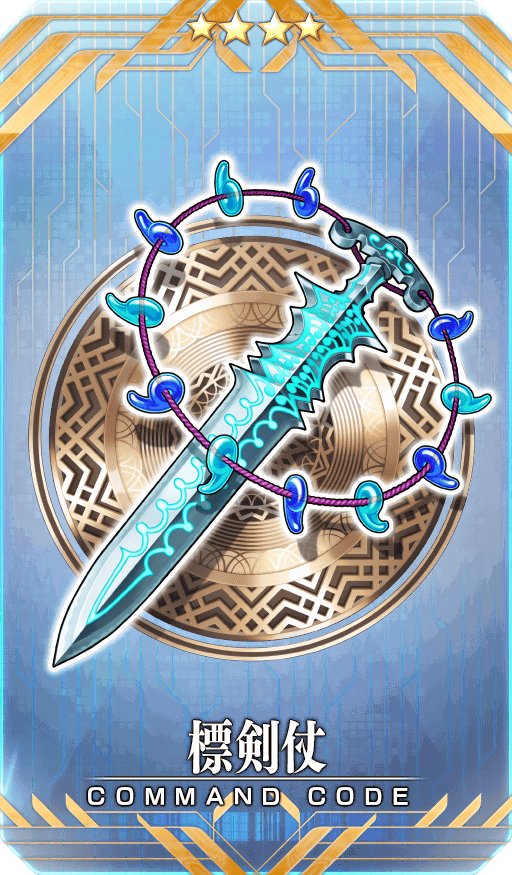 |
★★★★SR |
| 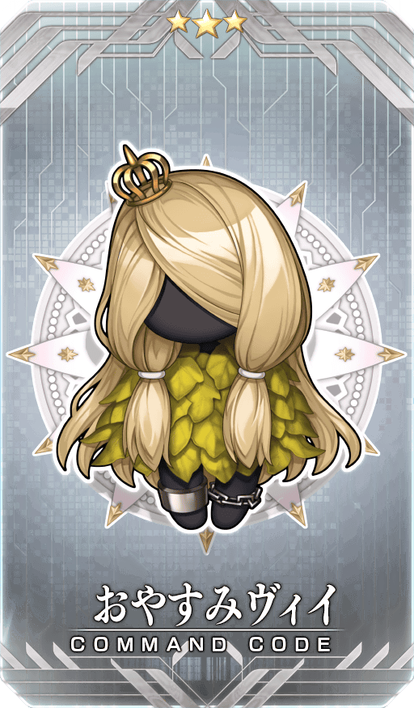 |
★★★R |
活動道具可自點擊管理室(ターミナル)畫面右上「活動報酬」鍵所顯示的「活動道具交換」畫面，交換以下的道具。
※關於傳承結晶、英靈結晶・流星之芙芙ALL★4(HP)、英靈結晶・日輪之芙芙ALL★4(ATK)，在通過本活動的主線關卡後才能交換。 ※關於活動限定從者的靈基再臨素材及從者硬幣，在獲得活動限定從者後才能交換。 ※活動道具交換期間結束後「瓦爾基麗髮箍」「北極水晶球」「極光刨冰」「北極式天然冰」會消失。 ※「北極式天然冰」在活動期間結束後可交換成QP。
◆交換期間◆
2022年8月10日(三) 20:00～9月7日(三) 11:59
◆能用瓦爾基麗髮箍交換的道具◆
|
【活動限定概念禮裝】 【靈衣開放權】 【從者硬幣】 【技能強化＆靈基再臨素材】 【靈基再臨素材】 【其他道具】 |
◆能用北極水晶球交換的道具◆
| 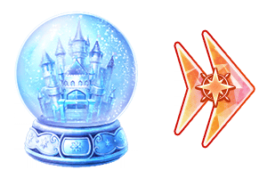 |
【活動限定概念禮裝】 【靈衣開放權】 【從者硬幣】 【技能強化＆靈基再臨素材】 【靈基再臨素材】 【其他道具】 |
◆能用極光刨冰交換的道具◆
|
【活動限定概念禮裝】 【靈衣開放權】 【從者硬幣】 【技能強化＆靈基再臨素材】 【其他道具】 |
◆能用北極式天然冰交換的道具◆
| 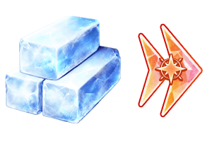 |
【活動限定從者靈基再臨素材】 |

在期間限定活動「北極夏日世界！ ～迦勒底盛夏的魔園觀光～」的特設頁面，實施智慧型手機用桌面的贈送中！
在社群媒體分享特設頁面就能下載，請務必使用。
◆配發期間◆
2022年8月10日(三) 20:00～8月31日(三) 11:59
◆特設ページ◆
https://www.fate-go.jp/special/2022-summer/
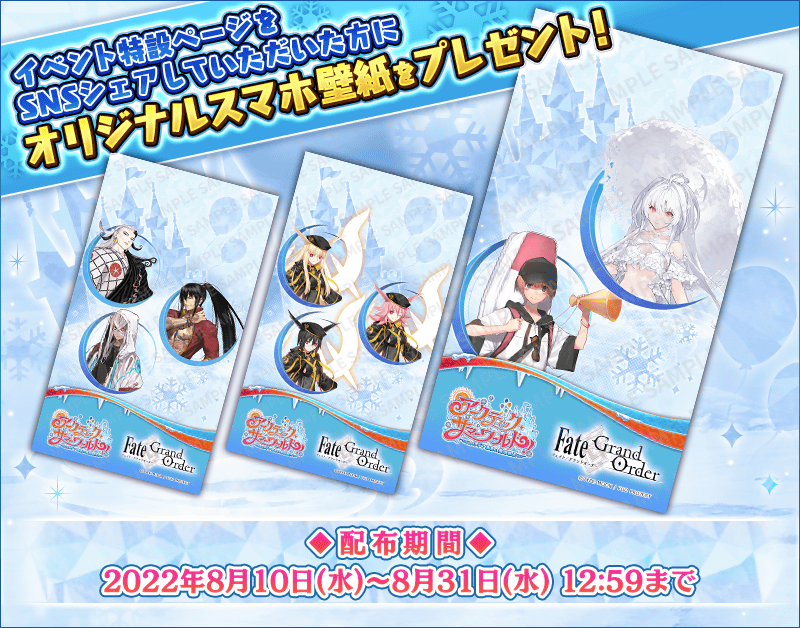
介紹在2022年8月10日(三)的更新後反映得更新內容之中，具有代表性的內容。
◆追加時間◆
2022年8月10日(三) 20:00～
在活動加成篩選器追加個別篩選器
從者選擇畫面和從者強化畫面等顯示的活動加成篩選器中，追加各活動中賦予的活動加成可個別篩選顯示的功能。
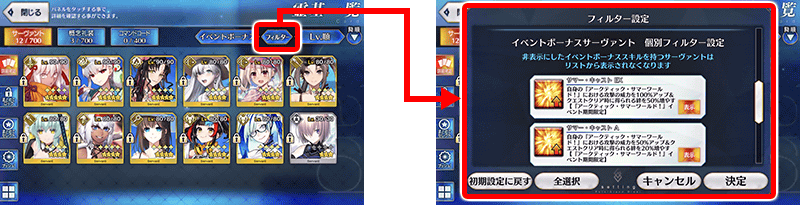
【8月14日(日) 9:00追記】
其他還有，
・北極夏日世界！ 阿瓦隆女士Pick Up召喚
・北極夏日世界！ 蘆屋道滿Pick Up召喚
・北極夏日世界！ 伊吹童子(Berserker)Pick Up召喚
以期間限定舉辦中！
並且，
・北極夏日世界！ 斯卡薩哈＝斯卡蒂(Ruler)Pick Up召喚
預定舉辦！
關於詳情，請自下述橫幅確認。
■「北極夏日世界！ 阿瓦隆女士Pick Up召喚」詳細情報

■「北極夏日世界！ 蘆屋道滿Pick Up召喚」詳細情報

■「北極夏日世界！ 伊吹童子(Berserker)Pick Up召喚」詳細情報

■「北極夏日世界！ 斯卡薩哈＝斯卡蒂(Ruler)Pick Up召喚」詳細情報